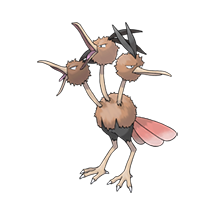

016 - Pidgey


Muito dócil. Se atacado, costuma levantar areia para se proteger em vez de revidar.
017 - Pidgeotto

Este Pokémon é cheio de vitalidade. Ele voa constantemente por seu vasto território em busca de presas.
018 - Pidgeot

Este Pokémon voa a uma velocidade de Mach 2, em busca de presas. Suas grandes garras são temidas como armas malignas.
019 - Rattata

Mastiga qualquer coisa com suas presas. Se você vir um, pode ter certeza de que outros 40 vivem na área.
020 - Raticate

Suas patas traseiras são palmadas. Elas funcionam como nadadeiras, permitindo que ele nade em rios e caçar presas.
021 - Spearow

Inepto para voar alto. No entanto, consegue voar muito rápido para proteger seu território.
022 - Fearow

Um Pokémon que remonta a muitos anos. Se pressente perigo, voa alto e para longe, instantaneamente.
039 - Jigglypuff


Quando seus enormes olhos oscilam, ele canta uma melodia misteriosamente suave que embala seus inimigos para que durmam.
040 - Wigglytuff

Tem uma pelagem muito fina. Tome cuidado para não irritá-lo, ou ele pode inflar constantemente e bater com o corpo.
052 - Meowth

Durante o dia, ele só dorme. À noite, patrulha seu território com os olhos brilhando.
053 - Persian

Embora seu pelo tenha muitos admiradores, é difícil criá-lo como animal de estimação por causa de sua maldade inconstante.
083 - Farfetch’d

Ele não consegue viver sem o caule que segura. É por isso que o defende dos atacantes com a própria vida.
084 - Doduo

Suas cabeças gêmeas têm exatamente os mesmos genes e lutam em perfeita sincronia uma com a outra.
085 - Dodrio

Agora ele tem três corações e três pares de pulmões. Embora não consiga correr tão rápido quanto Doduo, Dodrio consegue correr por períodos mais longos.
108 - Lickitung

Se a saliva pegajosa deste Pokémon entrar em contato com você e você não limpá-la, uma coceira intensa surgirá. E a coceira não vai embora.
113 - Chansey

Este Pokémon gentil põe ovos altamente nutritivos e os compartilha com Pokémon ou pessoas feridas.
115 - Kangaskhan

Embora carregue seu filhote em uma bolsa na barriga, Kangaskhan é ágil e intimida seus oponentes com golpes rápidos.
128 - Tauros

Quando mira em um inimigo, ele ataca furiosamente enquanto chicoteia seu corpo com suas longas caudas.
132 - Ditto

Sua capacidade de transformação é perfeita. No entanto, se o fizerem rir, ele não consegue manter o disfarce.
133 - Eevee

Sua capacidade de evoluir para muitas formas permite que ele se adapte de forma suave e perfeita a qualquer ambiente.
137- Porygon

É um Pokémon artificial. Como não respira, as pessoas ficam entusiasmadas com seu potencial de ser útil em qualquer ambiente.
143 - Snorlax

Este Pokémon glutão come constantemente, exceto quando está dormindo. Ele devora quase 400 quilos de comida por dia.